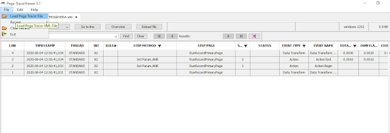

Visualizar Tracer
Para baixar a ferramenta de fácil visualização de Tracer e Log deve baixar no link abaixo:
https://github.com/pegasystems/pega-tracerviewer
A ferramenta pode ser baixada como arquivo zip.
Abra a ferramenta Tracer e vá para arquivo > Carregar arquivo Tracer Pega e selecione o arquivo xml.

Identificação de erros no Tracer
A coluna Status no registro do Tracer ajuda a identificar as etapas de processamento que levam a um erro. No registro do Tracer, a maioria das etapas retorna o status Bom (Good), indicando que a etapa foi concluída com sucesso. Caso uma etapa retorne um status de Falha (Fail), a etapa é concluída de forma malsucedida. A imagem a seguir mostra a ferramenta Tracer exibindo uma etapa com falha.
Um erro em um aplicativo pode indicar somente a última etapa de uma sequência de etapas com falha, mas não a causa da sequência da falha. A análise da sequência de eventos no Tracer ajuda a identificar a causa raiz que leva ao erro visto pelos usuários. Na ferramenta Tracer, quando você clica na etapa com falha, as propriedades do evento são exibidas.
Ao configurar o Tracer para monitorar a execução do aplicativo, é possível investigar problemas e eventos registrados pelo Tracer para identificar suas causas.
O Tracer exibe cada evento em uma linha separada. Os registros são exibidos de acordo com o seguinte código de cores:
Cinza – Processamento de atividades
Laranja – Eventos de regras de fluxo, decisão ou declarativas
Azul claro – Banco de dados PegaRULES e operações de cache